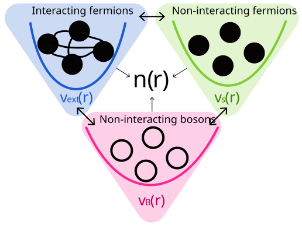

Introduction to DFT¶
Density Functional Theory (DFT)¶
DFT is a theoretical framework based on the Hohenberg and Kohn theorems, that established a one-to-one correspondence between the ground state electron density, \(n_0(\mathbf{r})\), the ground state wavefunction, \(\Psi_0(\mathbf{r})\), and the external potential, \(v(\mathbf{r})\). This means that the ground state properties of a system can be fully determined by the density.
The ground state total energy is then given as a functional of the electron density, \(E[n]\), which is given by:
where \(T[n]\) is the kinetic energy, \(E_{ee}[n]\) is the electron-electron interaction, \(E_{eN}[n]\) the electron-nuclear interaction, and \(E_{NN}[n]\) is the nuclear-nuclear interaction.
To determine the density of the system and evaluate the energy functional, DFT explores the mapping between the real system and fictitious systems shown in Figure 1.
{kind=link}

Figure1. Mapping between the real system and fictitious systems in DFT.¶
Kohn-Sham System¶
In the non-interacting fermionic system, known as the single-particle or Kohn-Sham system, the total energy functional is given by:
where the density \(n(r) = \sum_i |\phi_i(r)|^2\). And the single-particle kinetic energy is
The electron-electron repulsion and the total kinetic energy are related to \(T_s\) and \(E_{xc}\) as follows:
For the Kohn-Sham system, the Lagrangian is defined as follows:
to find the ground state KS orbitals and ground state density, the KS lagrangian is minimized \(\frac{\delta \mathcal{L}_{KS}[\{\phi_i\}]}{\delta \langle \phi_j|}=0\), or just \(\frac{\delta \mathcal{L}_{KS}[\{\phi_i\}]}{\delta \phi_j^*(r)}=0\), which yields to the KS-equation for the non-interacting fermionic system:
Important
where \(\psi_i(\mathbf{r})\) are the KS orbitals, and \(v_s(\mathbf{r})\) is the Kohn-Sham potential given by:
Orbital-Free DFT¶
In the non-interacting bosonic system, used in Orbital-Free DFT, the total energy functionals is given by:
where \(T_P[n] = T_{s}[n] - T_{vW}[n]\), \(T_{s}[n]\) is the non-interacting kinetic energy functional (KEDF, which is an \(\textbf{approximated}\) functional), and \(T_{B}[n]\) is the bosonic kinetic energy functional (von Weizsäcker kinetic energy functional), given by:
where: \(\phi(r)=\sqrt{n(r)}\). The appropiate Lagrangian for OF-DFT is given by:
where \(\mu\) is the Lagrange multiplier, \(N\) is the number of valence electrons in the system. Both \(n_0(\mathbf{r})\) and \(\mu\) are determined during the minimization.
To find the ground state density, the Lagrangian is minimized \(\frac{\delta \mathcal{L}_{OF}[n]}{\delta \langle \phi|}=0\) or \(\frac{\delta \mathcal{L}_{OF}[n]}{\delta \phi^*(r)}=0\), which yields to the KS-equation for the non-interacting bosonic system:
Important
where \(\phi(r)\) is the bosonic orbitals, and \(v_B[n](r)\) is the bosonic potential given by:
Solvers for OF-DFT and KS-DFT¶
In KS-DFT, the ground state electron density, \(n_0(\mathbf{r})\), is obtained from a self-consistent field (SCF) iteration, as shown in the table below.
In OF-DFT, the ground state electron density, \(n_0(\mathbf{r})\), is obtained from the direct minimization of the ground state energy density functional, \(E[n]\), as shown in the table below. The ground state energy is, \(E_0 = E[n_0]\).
Method |
OF-DFT |
KS-DFT |
|---|---|---|
Direct Minimization |
\(n_0(\mathbf{r})=\arg\underset{n}{\min}\big\{ \mathcal{L}_{OF}[n]\big\}\) |
\(\{\phi_i^0\} = \arg\underset{\{\phi_i\}}{\min}\big\{ \mathcal{L}_{KS}[\{\phi_i\}]\big\}\) |
SCF |
\(-\frac{1}{2}\nabla^2 \sqrt{n(r)} + v_B(r)\sqrt{n(r)} = \mu\sqrt{n(r)}\) |
\(-\frac{1}{2}\nabla^2 \phi_i(r) + v_s(r)\phi_i(r) = \varepsilon_i\phi_i(r)\) |
Time-Dependent Density-Functional Theory (TDDFT)¶
DFT can also describe a system out of equilibrium by propagating it in real time or in frequency space finding the roots of the frequency dependent polarizability (Casida). In the time regime the Runge and Gross theorem is an analog of the Hohenberg and Khon theorem. This theorem formally defines a one-to-one correspondance between densities and potentials, for any fixed initial many-body state, the it follows that the time-dependent density is a unique functional of the potentials and vice versa. This means that the many-body Hamiltonian \(\hat{H}(t)\) and thus the many-body wave function \(\Psi(t)\) are functionals of \(n(\mathbf{r},t)\) as well
Following the Runge and Gross theorem, we can write time-dependent Schrodinger like equation, namely:
In the KS formalism the KS orbitals are propagated with a time-dependent Hamiltonian, given by:
where the time-dependent KS potential is given by:
v_s[n](mathbf r,t) = v_{eN}(mathbf r,t) + v_H[n](mathbf r,t) + v_{xc}[n](mathbf r,t).
In the OF formalism the bosonic wavefunction \(\Psi(\mathbf{r},t)\) is propagated with a time-dependent KS-like Hamiltonian, given by:
The Bosonic KS-like potential is given by two major contributions
where the adiabatic approximation has been invoked fro the xc potential \(v_{xc}[n(t)]\). The Pauli potential is given by adiabatic and nonadiabatic contributions,
Note
The adiabatic Pauli potential can be specified according to any given KEDF available in DFTpy.
The nonadiabatic contribution is usually neglected in the literature. In DFTpy the JP functional is available,
where \(\mathbf{j}\) and \(\mathbf{q}\) are the electronic current density and the reciprocal space vector, respectively. The current density is determined by the standard equation \(\mathbf{j}(\mathbf{r})=\frac{1}{2i}\left[\Psi^*(\mathbf{r})\nabla\Psi(\mathbf{r})-\Psi(\mathbf{r})\nabla\Psi^*(\mathbf{r})\right]\). \(\mathcal{F}\) stands for Fourier transform and \(k_F(\mathbf{r},t)=[3\pi^2 n(\mathbf{r},t)]^{1/3}\) is the Fermi wavevector function of the local electron density.
Warning
The JP potential is numerically challenging. Refer to the original JP publication for details.
Note
Optical spectra and nonlinear electronic processes can be modelled by DFTpy. See tutorials for additional information. Ehrenfest dynamics is not yet available.
Linear response theory¶
Linear-response TDDFT refers to the determination of excitation energies and excited state properties by solving for the linear-response function.
Lehman reresentation of the response function, .. math:: chi(r,r’,omega) = sum_{n}frac{n_{0n}^*(r)n_{0n}(r’)}{omega-Omega_{n}+ieta}-frac{n_{0n}^*(r)n_{0n}(r’)}{omega+Omega_{n}+ieta}
where \(n_{0n}(r) = \langle \Psi_0 | \hat n(r) | \Psi_n \rangle\) is the ground-to-$n^text{th}$ excited state transition density, and \(\Omega_n = E_n - E_0\).
Applying the Runge-Gross theorem,
where the variation of the KS potential can be decomposed into:
and the variation of the bosonic potential can be decomposed into crucial contributions
which can be derived from their dependence on the density
The Dyson equation for the response function between the real system and the KS system then given by:
while the Dyson equation for the response function between the real system and the OF system then given by:
The Dyson equation turns into a matrix equation, known as the Casida equation, given by:
where defining \(\omega_{ia} = \varepsilon_a - \varepsilon_i\),
and
where in KS \(K(r,r',\omega)\) is the kernel given by:
while in OF \(K(r,r',\omega)\) is the kernel given by:
Collective modes such as plasmons are built from many particle–hole pairs in the fermionic KS picture but appear more directly in the bosonic reference, which can make Casida matrices much smaller for plasmon-dominated spectra while describing the same interacting response once approximations are controlled. Approximate \(f_P\) (e.g. Thomas–Fermi–von Weizsäcker in linear response) shifts peaks slightly compared with KS-TDDFT; Landau damping needs nonadiabatic kernels—DFTpy offers the nonadiabatic Pauli (JP) formulation for that regime.
In frequency space, DFTpy performs Casida TD-OFDFT using the modules Casida, CasidaRunner, and Hamiltonian on top of a converged ground-state density (see the linear-response tutorial lr-ofdft-tutorial.ipynb); this parallels real-time propagation in td-ofdft-tutorial.ipynb.
Short note on the implementation¶
In DFTpy, the electron density is represented in a discrete set of points given by a Cartesian grid and contained in a simulation cell that is specified by 3 lattice vectors. The number of grid points and the cell size are regulated by the user. The Cartesian grid allows for an efficient parallelization of data and work (we use mpi4py), and for the exploitation of Fast Fourier Transforms for solving convolution integrals (such as the one needed to compute \(E_H[n]\)). Either NumPy.fft or PyFFT are used depending on user input.